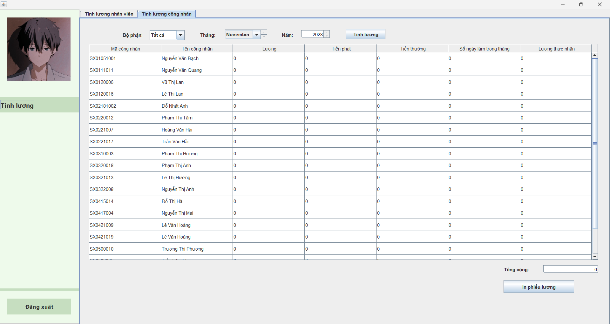

-
Tạo tài khoản
Đăng nhập với tài khoản Admin để vào chức năng quản lý tài khoản
Nhập mã nhân viên, tên đăng nhập mật khẩu và chọn chức năng. Sau đó Bấm tạo mới
Tài khoản được tạo thành công và hiển thị vào mục danh sách tài khoản
-
Chỉnh sửa thông tin tài khoản
Vào chức năng quản lý tài khoản bấm chọn tài khoản muốn thay đổi thông tin
Thông tin tài khoản được chọn hiển thị mục thông tin tài khoản. Admin thay đổi thông tin bằng cách thay đổi trực tiếp các mục thông tin đã hiển thị và bấm cập nhật.
-
Xóa tài khoản
Chọn tài khoản cần xóa và bấm Xóa tài khoản
Thông tin tài khoản được chọn đã được xóa và danh sách tài khoản được cập nhật lại
Quản lý nhân sự thực hiện các chức năng liên quan đến nhân sự ( công nhân và nhân viên hành chính) bao gồm: Thêm nhân sự, thôi việc nhân sự, đánh giá nhân sự trên hệ thống.
Để thực hiện các chức năng của quản lý nhân sự, đăng nhập với quyền được thực hiện quản lý nhân sự
-
Thêm nhân sự
Bấm vào mục công nhân để thêm thông tin công nhân vào hệ thống và thực hiện bấm Thêm công nhân
Nhập thông tin công nhân đầy đủ và bấm xác nhận để thêm công nhân vào hệ thống
Thêm thông tin công nhân thành công và hiển thị
-
Thôi việc nhân sự
Chọn nhân sự cần thôi việc và bấm thôi việc làm
Hệ thống thông báo xác nhận và bấm YES.
-
Đánh giá nhân sự
Chọn chức năng đánh giá nhân sự
Chọn mục công nhân hoặc nhân viên để đánh giá.
Nhập điểm đánh giá cho các nhân sự -> Bấm Đánh giá->Bấm Xác nhận
Hệ thống thông báo đánh giá thành công
Nhân viên quản lý hợp đồng là người thực hiện các chức năng liên quan đến thông tin hợp đồng trên hệ thống.
-
Thêm hợp đồng
Đăng nhập với tài khoản quản lý hợp đồng và chọn chức năng quản lý hợp đồng. Sau đó chọn mục tạo hợp đồng
Điền thông tin hợp đồng mục tạo hợp đồng gồm: tên hợp đồng, mã khách hàng, ngày bắt đầu, ngày kết thúc, các sản phẩm có trong hợp đồng

Bấm Xác nhân để thêm thông tin hợp đồng vào hệ thống
-
Xem tiến độ hợp đồng
Chọn hợp đồng muốn xem tiến độ, sau đó thông tin được hiển thị bên trái gồm thông tin hợp đồng, tiến độ sản xuất sản phẩm
Quản lý quy trình sản xuất là chức năng giúp nhân viên quản lý quy trình sản xuất thự hiện quản lý thông tin công đoạn, sản phẩm, phân chia công đoạn cho sản phẩm, phân công côn đoạn cho công nhân.
-
Phân chia công đoạn sản phẩm
Chọn chức năng Danh sách sản phẩm-> Chọn sản phẩm cần phân chia công đoạn
Nhập thông tin công đoạn muốn thêm vào sản phẩm gồm: Tên công đoạn, đơn giá, mã bộ phận, công đoạn tiên quyết…-> Bấm Lưu. Công đoạn được thêm vào sản phẩm.

-
Phân chia công đoạn cho công nhân
Chọn chức năng Danh sách sản phẩm-> Phân chia công đoạn
Chọn công đoạn cần giao cho công nhân và nhập số lượng giao
Bấm phân công, bảng phân công ngày hôm nay sẽ được cập nhật phân công mới

-
Chấm công công nhân
Vào chức năng chấm công-> Chấm công công nhân
Tìm kiếm Tổ/nhóm, hoặc theo mã nhân viên. Sau đó nhập số lượng công đoạn làm được của các công nhân trong ngày->Bấm chấm công
-
Chấm công nhân viên
Chọn chức năng chấm công-> Chấm công nhân viên

Tìm kiếm phòng ban-> Nhập dữ liệu chấm công-> Chấm công
-
Tính lương công nhân
Chọn chức năng tính lương-> Tính lương công nhân-> Bấm tính lương
 -
Tính lương nhân viên
Chọn chức năng tính lương->Tính lương nhân viên-> Tính lương